광운대학교 ERP연구회 · MIS×AI 스터디
AIM 1기 OT
스터디 소개 · 커리큘럼 · 웹 · AI 트렌드
2026-09-14 · 진도 없이 방향만 맞추는 60분
kwu-erpclub.github.io
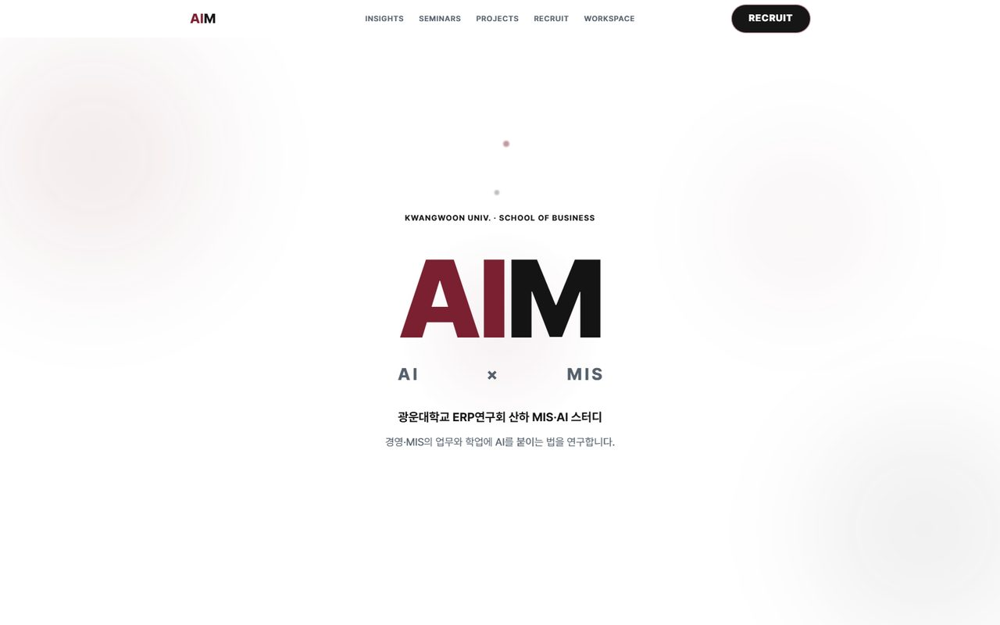
AIM 허브 · 인사이트 · 세미나 · 프로젝트 · 워크스페이스
AIM
AIM 1기 OT · AIM 소개
02 / 35
1
AIM 소개스터디 목적 · 채용 전형 변화 · 일정
9분
2
커리큘럼한 학기 구조 · 학습 자동화 · 팀 프로젝트
18분
3
AIM 웹인사이트 · 세미나 · 프로젝트 · 워크스페이스
12분
4
AI 트렌드와 판단 기준지금까지의 흐름 · 판을 읽는 축 · 판단 기준
17분
5
마무리다음 주까지 준비물 · 질문 · 서로 소개
4분
AIM
AIM 1기 OT · AIM 소개
03 / 35
ERP연구회 산하 AI 스터디
MIS×AI 스터디 AIM · 2026-2학기 1기
2013~ERP연구회광운대학교 경영학부 학회
2026-2 신설AIMMIS×AI 스터디
전공자 대상 강의와 단기 강좌 사이에서 경영학부 학생이 설 자리를 만든다.
취업, 그리고 그 뒤의 경쟁력을 위해 AI를 어떻게 쓸지 함께 고민한다.
운영자도 배우는 입장이라 같이 고민하고 같이 성장한다.
진행과 자료는 운영자가 맡고, 판단과 결과물은 참가자가 만든다.
AIM
AIM 1기 OT · AIM 소개
04 / 35
채용 전형이 바뀌고 있다
2026년 7~9월, 대기업 네 곳의 공지
클릭으로 한 건씩
07-30
SK하이닉스
자기소개서 폐지,
AI 활용 역량 서식
09-01
신한은행
자기소개서 폐지,
AI 협업면접 도입
09-03
포스코그룹
자기소개서 항목 폐지,
학내외 활동으로 대체
09-08
기아
AI 문제해결력 평가 신설,
30개 부문
국내 주요 대기업 25곳 중 8곳이 AI 활용 경험을 채용 평가에 반영①
기획·경영지원을 포함한 문과 직무도 평가 대상에 들어왔다.
AIM
AIM 1기 OT · AIM 소개
05 / 35
문과 직무 공고가 요구하는 것
공고 문구 셋과 숫자 셋
코스맥스 · 마케팅 / 해외영업 / 구매 / 경영관리
“AI 활용 역량”
한국콜마
“SAP 등 ERP 활용 경험, 데이터 분석 능력, AI 활용 능력”
경동나비엔 · 인사
“HR Tech 및 생성형 AI 활용 우수자”
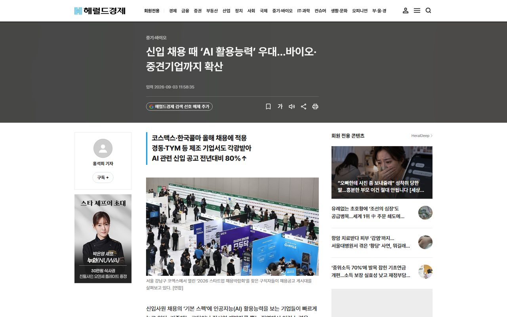
헤럴드경제 · 문과 직무 공고 분석
80%
신입 공고 AI 키워드 1년 새 증가②
4위 · 24%
인사담당자가 꼽는 신입 역량 순위③
200 ↔ 8,966
한 증권사 사내 평가, 고득점자 평균과 저득점자 최대 토큰④
기업도 AI 역량이 무엇인지 아직 정하지 못했다.
AI만 파고드는 실수를 피하고, 전공 역량과 AI 활용을 같이 키워 앞으로의 시장에서 경쟁력을 만든다.
AIM
AIM 1기 OT · AIM 소개
06 / 35
9월 14일부터 11월 16일까지
매주 월요일 18:00~20:00 · 세션 7회 · 시험기간 휴식
9월
MTWTFSS
123456
78910111213
14151617181920
21222324252627
282930
10월
MTWTFSS
1234
5대체휴일67891011
12131415161718
19202122232425
262728293031
11월
MTWTFSS
1
2345678
9101112131415
16최종 발표171819202122
23242526272829
30
세션일 7회
10-05 대체휴일
10-07~25 시험기간
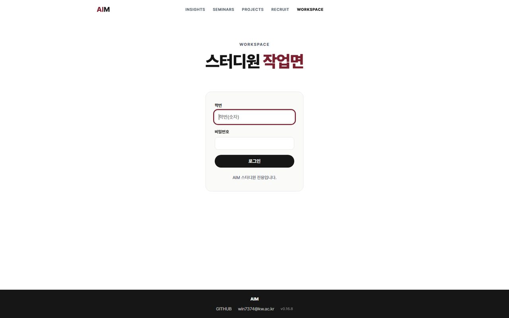
워크스페이스에 같은 일정이 올라간다
10-05는 쉬고 팀끼리 방향만 맞춘다.
진행과 자료는 운영자가, 판단과 결과물은 참가자가 맡는다.
2
02
커리큘럼
볼 것 = 한 학기 구조 · 학습 자동화 · 팀 프로젝트
PART 2 구성
1학습 자동화 2회 뒤 시험기간, 그다음 팀 프로젝트타임라인
2회차마다 그날 끝내는 일이 하나씩회차 표 7행
3학습과 자동화는 잘 맞지 않는다대비 · 근거 2
4시험 공부와 과제는 도구가 다르다도구 배치 · 4갈래
5도메인 지식이 결과를 가른다수치 3쌍
1 AIM 소개2 커리큘럼3 AIM 웹4 AI 트렌드와 판단 기준5 마무리
AIMAIM 1기 OT · 커리큘럼08 / 35
학습 자동화 2회 뒤 시험기간, 그다음 팀 프로젝트 4회
1차 = 개인 · 2차 = 팀 · 사이에 대체휴일과 시험기간
2회차
학습 자동화
과목별 학습 분석 → 워크플로 피드백
산출물 = 내 학습 워크플로 1개
4회차
팀 프로젝트
룰 수립 → 모듈 구현 → 상호 검수 → 최종 발표
산출물 = 팀 결과물 1개 · 협업 룰 1벌
학습 자동화를 앞에 둔다
요청이 가장 많았고 지금 학생에게 도움이 가장 큰 소재
AIMAIM 1기 OT · 커리큘럼09 / 35
회차마다 그날 끝내는 일이 하나씩 있다
매주 월요일 18:00~20:00 · 회차 7회
회차날짜그날 끝내는 일
109-14OT · 방향 맞추기
209-21과목별 학습 분석 · 자료 형태와 시험 방식을 적고 자동화할 곳을 정한다
309-28워크플로 피드백 · 문제와 효과를 점검하고 팀을 짠다
휴식 10-05 ~ 10-2510-05 대체휴일 · 10-07~10-25 시험기간 · 팀끼리 진행 방향 소통
410-26팀 룰 수립과 무대 선택
511-02각자 모듈 구현
611-09서로 검수하고 이음새 연결
711-16최종 발표
클릭으로 한 회차씩
AIMAIM 1기 OT · 커리큘럼10 / 35
학습과 자동화는 잘 맞지 않는다
남기는 것과 줄이는 것을 먼저 나눈다
생각하고 부딪히는 공부 자체
읽고 떠올리고 틀리는 과정은 사람이 한다
줄이는 것
공부 주변의 준비 시간
- 개념 정리
- 귀찮은 반복 작업
- 학습 계획 세우기
근거 ⑤ 45일 뒤 시험 점수
0.5%AI 무제한 사용
0.5%전통 학습
근거 ⑥ 3만 명 30개월 추적
0%시험 점수 하락
숙제 속도는 상승
학생이 공부에만 집중하도록 주변을 줄인다
공부에 쓰는 시간은 그대로 두고 준비 시간만 덜어 낸다
AIMAIM 1기 OT · 커리큘럼11 / 35
지금 구조에는 연구가 지적한 빈틈 세 곳이 남는다
과목 폴더와 규칙 파일로 톤을 고정하고, 정리와 퀴즈를 과목 기준에 맞춘다
university/과목 학습 저장소
_common/STUDY_GUIDE템플릿 3종
.claude/skills/subject-createlecture-uploadlecture-organizelecture-exam
subjects/{과목}/과목마다 한 벌
CLAUDE.md기본 정보시험 정보시험 전략문제 예시주차별 내용주의사항
raw / notes / organized / exams원본필기정리본기출
1과목 폴더 생성과목 특성·유의사항 고정
2자료 변환PDF·docx → md
3정리 기준 주입강의계획서·강의 정보·족보
4AI가 과목 기준으로 정리빈틈 · 요약 주체
5옵시디언에서 읽기빈틈 · 간격 반복
6퀴즈와 출제 이력빈틈 · 문항 검수
스터디에서 고칠 빈틈 3
요약 주체AI가 대신 씀 · 생성 효과 손실
간격 반복복습 간격 설계 없음
문항 검수검수 89% · 미검수 73%⑦
AIMAIM 1기 OT · 커리큘럼12 / 35
시험 공부와 과제는 도구가 다르다
올린 자료 안에서 답하는 학습 모드 · 파일을 읽고 쓰는 에이전트
개념 정리 · 퀴즈 · 인출
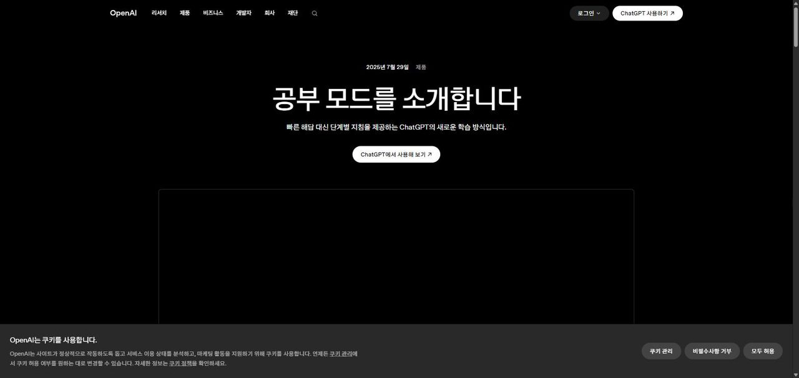
ChatGPT 학습 모드
올린 자료 밖을 말하지 않고 답 대신 풀이를 유도한다
Gemini(AI Plus) · NotebookLM
파일을 읽고 쓰고 실행
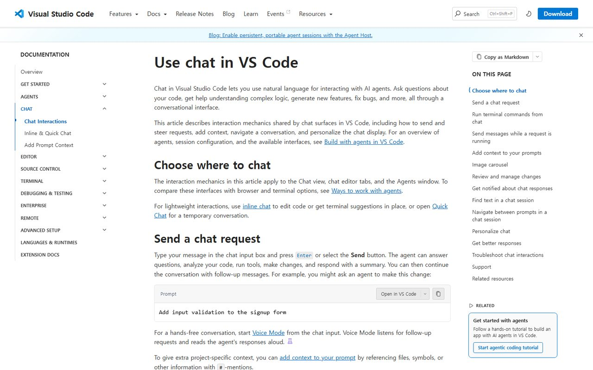
VS Code 에이전트 모드
VS Code + Copilot 에이전트
파일 읽기 · 수정 · 명령 실행
보고서 초안 · 표 정리 · 인용 형식 · 제출 규칙 · 마감 목록 갱신
검수는 만든 모델과 다른 모델로
학습 자체는 자동화하지 않고 학습 주변을 줄인다
AIMAIM 1기 OT · 커리큘럼13 / 35
파일을 직접 읽는 도구는 네 갈래로 나뉜다
붙여넣기를 줄이면 토큰이 줄어든다 · 지시문에 "답 대신 힌트" 규칙을 넣는다
편집기형 · 학생 표준
편집기 안에서 내 파일을 열고 고친다
터미널형Claude Code · Codex · Copilot CLI
데스크톱 앱Claude Cowork 폴더 연결 · ChatGPT Work
노트 안Obsidian 플러그인 · NotebookLM
AIMAIM 1기 OT · 커리큘럼14 / 35
같은 AI를 써도 도메인 지식이 결과를 가른다
연구 3건 · 능력 범위 안과 밖에서 결과가 갈린다
상승
하락
능력 범위 안범위 밖신입숙련자상위 성과자하위 성과자
컨설턴트 758명 ⑧
콜센터 5,179명 ⑨
케냐 소상공인 640명 ⑩
AI 결과를 판단하고 피드백하는 일은 사람만 한다
도메인 지식 없이 AI만 쓰면 결과물의 완성도에 한계가 온다
AIMAIM 1기 OT · 커리큘럼15 / 35
2차는 룰을 먼저 정하고 시작한다
주제 = 팀이 가진 문제 또는 준비된 케이스 중 팀이 고른다
2차 목표
기준을 세우고 결과를 통제한다
프로젝트에서 판단 기준을 만들고 지킨다
학부 과제 수준을 넘어선다
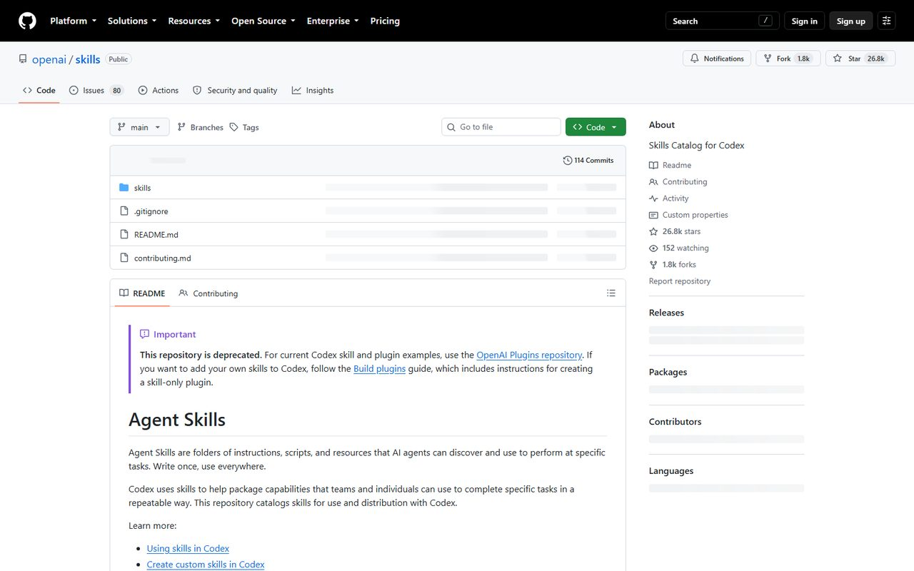
GitHub 저장소 · 파일과 변경 이력이 한곳에
01저장소GitHub 한 곳에 모은다
02모듈 소유파일마다 담당 1명
03변경 규칙브랜치와 PR로만 고친다
04검수 규칙만든 사람 외 1명이 본다
05결정 기록바꾼 이유를 남긴다
클릭으로 한 칸씩 · 시작 전에 팀이 채운다
남이 내 결과물을 쓰고 검수한다
자기 결과물의 빈틈은 자기가 못 본다
3
3
AIM 웹
만든 방식 · 네 페이지의 쓰임 · 오늘 신청할 것
이 파트에서 보는 것
17이 사이트를 만든 방식기획 · 구현 · 검수
18인사이트매주 모으는 AI 트렌드
19세미나회차 자료와 특강
20프로젝트남는 결과물
21워크스페이스와 오늘 신청로그인 · 준비 6가지
AIM 소개커리큘럼AIM 웹
AI 트렌드와 판단 기준마무리
AIMAIM 1기 OT · AIM 웹17 / 35
이 사이트도 기획 · 구현 · 검수 순서로 만들었다
요구 기준은 사람이 쓰고 코드는 AI가 만든다 · 스터디에서 배우는 방식과 같다
STEP 01기획
요구 기준과 화면 규칙을 사람이 쓴다
STEP 03검수
규칙과 어긋난 곳을 사람이 잡아낸다
AIMAIM 1기 OT · AIM 웹18 / 35
인사이트는 매주 AI 트렌드를 모아 정리한다
수집과 정리는 자동 · 무엇을 담을지는 운영자가 설계
kwu-erpclub.github.io/insights
인사이트 목록 · 주제 필터와 기고 카드
01기준은 운영자가 설계
주제와 선별 기준은 먼저 정하고
수집은 매주 자동으로
02질은 아직 낮을 수 있다
실사용자가 적어 다루는 범위가 좁다
03요청은 기준에 반영
더 알고 싶은 주제를 말하면
다음 수집 기준에 넣는다
AIMAIM 1기 OT · AIM 웹19 / 35
매주 세션 자료는 세미나에 올린다
중요한 주제는 특강으로 따로 연다
kwu-erpclub.github.io/seminars
세미나 목록 · 회차와 특강이 한 줄로
회차 자료매주 올라온다
발표 자료와 실습 안내를 회차마다 게시
먼저 읽을 것질문에서 위임으로
AI 활용 구조 3단 · 기초가 부족하면 여기부터
AIMAIM 1기 OT · AIM 웹20 / 35
개인 · 팀 프로젝트가 여기에 쌓인다
결과는 공개 페이지로 남는다 · 지금 2건 등록
kwu-erpclub.github.io/projects
프로젝트 목록 · 지금 2건
종강 뒤에도 남는 증거
ADsP 스터디 1기 · AIM 허브 사이트
1차 개인2차 팀
AIMAIM 1기 OT · AIM 웹21 / 35
워크스페이스는 스터디원만 들어오는 공간이다
원하는 일정이나 추천 리서치 방법을 말하면 반영
kwu-erpclub.github.io/workspace
워크스페이스 로그인 화면
학사 일정개강 · 시험 · 휴일
AIM 일정회차와 발표일
모집 공고공모전 · 채용 · 자격증
로드맵한 학기 진행 계획
공지세션 안내와 준비물
로그인 = 학번 + 초기 비밀번호 000000 · 내 정보에서 바로 변경
AIMAIM 1기 OT · AIM 웹22 / 35
오늘 신청해 둘 것 6가지
칸을 눌러 확인 · 같은 목록은 워크스페이스 공지에 링크와 함께 게시
워크스페이스 비밀번호 변경학번 + 000000으로 로그인 후 내 정보에서 변경
Google AI Plus 학생 무료학생 인증 · 결제수단 등록 · 12-31 마감
1년 뒤 자동 유료
해지일 캘린더 등록
GitHub 계정 · Student Pack학교 이메일 또는 학생증 · 승인 수일~4주
전원 필수
Copilot Free 켜기인증 없음 · 채팅 월 50회 · 승인 전까지 사용
VS Code · Copilot 확장설치 후 로그인 · 세팅 가이드는 공지에 게시
NotebookLM 접속 확인구글 계정 · 검수용 Claude · ChatGPT 무료 계정
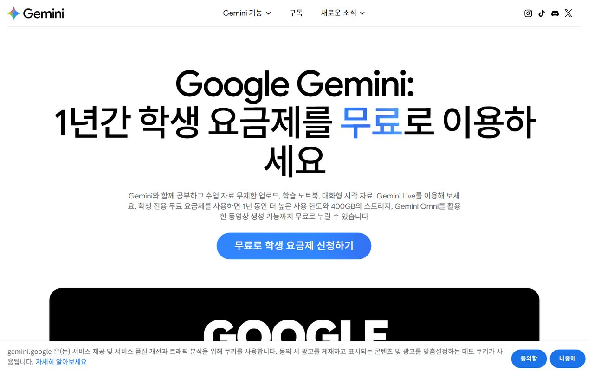
Google AI Plus 학생
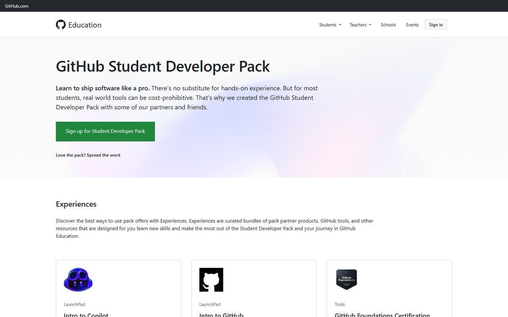
Student Pack
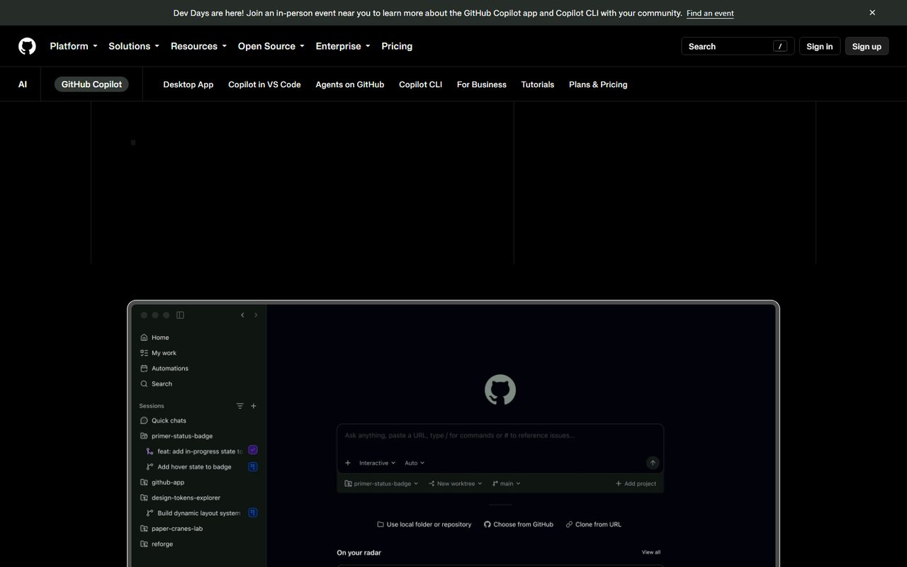
Copilot Free
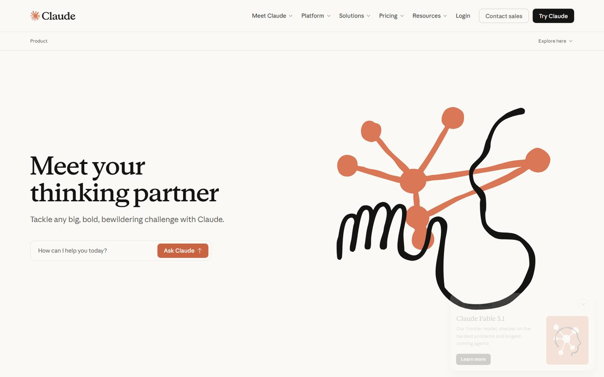
Claude · 검수용
이미 쓰는 유료 도구는 같은 역할에 그대로 배치 · 검수는 만든 모델과 다른 모델
4
04
AI 트렌드와 판단 기준
볼 것 = 지금까지의 흐름 · 판을 읽는 축 · 우리가 세울 판단 기준
PART 4 구성
1AI 활용은 세 번 바뀌었다시간축 4단
2판을 읽는 축은 세 가지다3카드
3모델은 하나, 붙는 제품은 여럿이다2층 도식
4프롬프트에서 하네스로 갈수록 안정된다계단 3단
5판단 기준은 경계 대장으로 쌓는다표 5칸
1 AIM 소개2 커리큘럼3 AIM 웹4 AI 트렌드와 판단 기준5 마무리
AIMAIM 1기 OT · AI 트렌드와 판단 기준24 / 35
AI 활용은 세 번 바뀌었다
단계마다 사람이 하는 일이 달라졌다
2022-11
질문과 답
묻고 답을 받는다
ChatGPT 공개
2024
자료 기반
파일·이미지를 넣고 그 자료로 답한다
컨텍스트 · RAG · 멀티모달
2025
도구 사용
도구를 쓰고 여러 단계를 스스로 진행한다
Claude Code · Codex · MCP
2026
규칙 통제
에이전트 여러 기를 규칙으로 통제한다
하네스 · 스킬 규격 · 컴퓨터 조작
AIMAIM 1기 OT · AI 트렌드와 판단 기준25 / 35
지금 판을 읽는 축은 세 가지다
새 소식이 나오면 어느 축의 일인지부터 본다
축 01
모델 경쟁
OpenAI · Anthropic · Google · Meta에
중국 오픈웨이트가 가격으로 붙는다
축 02
사용 방식의 이동
사람의 일이 묻기에서 시키고 검수하기로 옮겨 갔다
축 03
일과 채용의 변화
기업이 재는 것이 사용량에서 절차로 옮겨 갔다
AIMAIM 1기 OT · AI 트렌드와 판단 기준26 / 35
모델은 하나, 그 위에 붙는 제품은 여럿이다
LLM = 대량의 글로 학습한 언어모델
챗봇 · 에이전트 · 편집기가 같은 모델 위에 올라간다
서비스 02
에이전트
도구 권한 · 여러 단계 실행
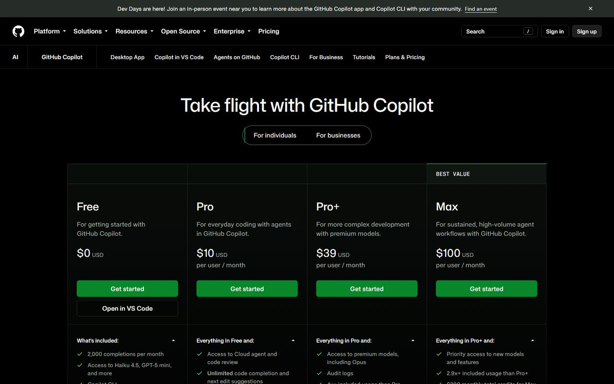
GitHub Copilot
같은 모델이라도 무엇을 붙였느냐로 결과가 갈린다
AIMAIM 1기 OT · AI 트렌드와 판단 기준27 / 35
프롬프트에서 하네스로 갈수록 결과가 안정된다
STEP 2
컨텍스트미리 갖춰 준 자료와 기준
RESULT
하네스규칙 · 검증 · 기록의 틀
하네스 · 모든 작업 공통
글로벌 규칙
한국어로 답한다
파일은 읽고 나서 고친다
임의 추정 금지
증거 없는 완료 금지
파괴 작업은 사람이 실행
컨텍스트 · 과목마다 1개
과목 규칙 파일 6칸
과목 특성유의사항자료 형태
시험 방식정리 기준톤
과목마다 기준이 달라 파일도 과목 수만큼 둔다
하네스 · 제출 전
검증 게이트
validatetestbuild GREEN
세 줄이 모두 통과해야 반영한다
AIMAIM 1기 OT · AI 트렌드와 판단 기준28 / 35
요즘 쓰이는 이름 다섯은 뿌리가 같다
에이전틱 · 그래프 · 스킬 · 평가 · 컴퓨터 조작
1에이전틱 엔지니어링
도구를 쓰고 여러 단계를 스스로 진행하게 설계
4평가 eval
AI 결과를 자동으로 채점하는 장치
5컴퓨터 조작
화면을 보고 마우스·키보드를 직접 씀
이름은 새로워도 뿌리는 프롬프트 · 컨텍스트 · 하네스다
AIMAIM 1기 OT · AI 트렌드와 판단 기준29 / 35
AI 트렌드 = AI를 얼마나 잘 통제하느냐의 경쟁
대충 말해도 정확히 알아듣게 만드는 싸움
01모델과 방법이 좋아져도 결정은 사용자의 판단과 기획이 한다
02싼 모델도 쓰는 사람에 따라 비싼 모델을 이긴다
AIMAIM 1기 OT · AI 트렌드와 판단 기준30 / 35
유료와 무료 = 하는 일은 같고 한도가 다르다
과제 하나 분량은 무료로 충분, 하루 종일 돌리는 작업은 유료
비교 공개
운영자 화면 · Claude Code (유료)
ctx 64%
주 42%
설정은 기본값이 아니다
auto mode·1M 컨텍스트 = 긴 작업용 · 학생 플랜은 한도 안에서 같은 흐름
여러분 화면 · VS Code + Copilot (무료)
같은 자리에서 같은 일을 시킨다
파일을 열어 두고 지시 · 결과를 파일에 바로 반영
같은 것
파일 읽기·수정 · 명령 실행 · 여러 단계 반복 · MCP 연결
다른 것
한도(무료 월 50회·200크레딧, 유료 사실상 무제한) · 모델 선택권 · 긴 작업의 안정성
회차 3 = 같은 과제를 두 도구로 돌려 결과와 소요 크레딧을 나란히 비교
에이전트 체험은 Copilot으로 통일 · Gemini 앱의 에이전트 모드는 AI Plus에서 보장되지 않음
AIMAIM 1기 OT · AI 트렌드와 판단 기준31 / 35
판단 기준 = AI가 틀린 지점을 5칸으로 적는 기록
경계 대장 = 과업부터 고유 조건까지 5칸 · 오른쪽 열은 기록 1건
칸 순서대로
대장 칸적는 내용예시 기록 1건
칸 01
과업
경영정보 중간 범위 요약
칸 02
AI의 답
핵심 개념 12개, 4챕터 구성
칸 03
무엇과 대조
강의계획서, 수업 필기
칸 04
맞았나
3챕터 누락, 개념 2개 범위 밖
칸 05
일반론인가 내 상황 고유인가
골격은 일반론, 시험 범위는 내 강의 고유
주간 고정 규칙 = AI가 틀린 것 1개 기록
경계는 틀려 본 곳에서만 드러남 · 칸 05가 쌓인 만큼 위임 범위가 넓어짐
AIMAIM 1기 OT · AI 트렌드와 판단 기준32 / 35
도구는 계속 바뀐다.
남는 것은 판단과 기록
판단경계 대장 5칸
기록던진 질문 · 검증한 방법 · 바뀐 수치
갱신매주 틀린 것 1개
AIMAIM 1기 OT · 마무리33 / 35
회차 2 과목 분석의 재료 4가지
다음 주 회차 2 전까지 각자 채워 오는 항목
01
내 과목 목록
이번 학기 듣는 과목 전부
분석 단위 = 과목 1개
02
과목별 자료 형태
PDF · PPT · 녹음 중
무엇으로 오는가
자료 형태가 도구를 정함
03
시험 방식
객관식 · 서술 · 과제 중 무엇인가
방식이 정리 형태를 정함
04
매주 반복하는 귀찮은 일 1개
손으로 매주 되풀이하는 작업 1건
자동화 소재 = 여기서 고름
신청 6항
워크스페이스 비밀번호 변경 · Google AI Plus 학생 · GitHub Student Pack · Copilot Free · VS Code 확장 · NotebookLM 접속
AIMAIM 1기 OT · 마무리34 / 35
오늘 세운 것 = 판단 기준과 기록 규칙
질문
지금 이 자리에서 받는다 · 남는 질문은 워크스페이스 공지에 올린다
서로 소개
이름 · 전공 · 써 본 AI · 이번 학기 기대
다음 주까지
과목 재료 4가지 · 신청 6항
클릭으로 한 항목씩
AIMAIM 1기 OT · 마무리35 / 35
출처
본문 각주 번호 ①~⑩ = 아래 표의 번호 · 본문 장에는 번호만 표기
캡처 전건 2026-09-10
URL 목록은 세미나 페이지에 첨부 · 외부 이미지는 교육용 인용
수치 · 연구 각주
①대기업 25곳 조사이데일리
②2026년 1~5월 공고 분석잡코리아 · 헤럴드경제 09-02
③153개사 인재상 조사원티드랩 · AI타임스 2025-12
④증권사 사내 평가전자신문 09-01
⑤Barcaui 2025Computers in Human Behavior: Reports
⑥중국 학생 26,811명 30개월 추적스톡홀름대 · 알자지라 2026-09-02
⑦An et al. 2025arXiv:2507.05629
⑧Dell'Acqua et al. 2023/2025Organization Science
⑨Brynjolfsson · Li · Raymond 2025QJE
⑩Otis et al. 2025Management Science
기사 · 도구 · 캡처
기사전형 변화 4건
더페어 · 매일일보 · 인사이트코리아 · 브랜드뉴스 08-28
도구요금·기능 공식 안내
OpenAI · Anthropic · Google · GitHub
트렌드GPT-6 Astra 공지 · HN 스레드
인사이트 기사 「그래프 엔지니어링」
캡처AIM 사이트 화면
캡처채용 기사 화면
캡처도구 공식 페이지
캡처신청 페이지
캡처시대별 대표 화면 · OpenRouter 가격표